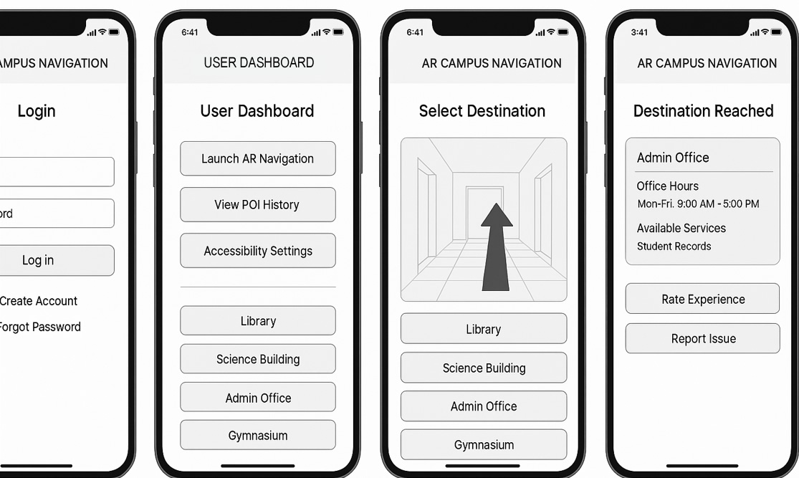

AUGMENTED REALITY NAVIGATION SYSTEM FOR FILAMER CHRISTIAN UNIVERSITY
CHAPTER I – INTRODUCTION
I. Overview of the Current State of Technology
Strengths:
- Offers a comprehensive and up-to-date overview of AR, contextualized within global Industry 4.0 frameworks.
- Effectively distinguishes AR from VR, emphasizing AR's layered interaction with the real environment.
- Integrates theoretical foundations such as digital twins, cloud connectivity, and sensor-based feedback, which elevate technical depth.
Suggestions for Improvement:
- While international examples like Google ARCore are strong, inclusion of local AR use cases (e.g., DepEd Digital Rise, Philippine startup deployments) would enhance contextual relevance.
- Some descriptions drift toward promotional tone (e.g., “AR continues to push technological boundaries…”); revise these to maintain scholarly objectivity.
- The transition to campus-specific navigation use could be smoother - consider ending this section with a lead-in to local navigation challenges or needs.
Recommended Enhancement:
Incorporate educational AR implementations in Philippine institutions to create a tighter bridge to the proposed system.
II. Desired State of Technology
Strengths:
- Clearly defines the intended application of AR for campus navigation, specifying functional components like scanning areas, POI features, and directional guidance.
- Establishes the proposal’s relevance for enhancing accessibility and operational efficiency on campus.
Suggestions for Improvement:
- The section repeats terms (e.g., “Application-based application”), which could be streamlined for clarity.
- “Scanning area” and “navigation-based feature” need clearer explanation or technical references - are these QR codes, geo-markers, or visual triggers?
- The discussion of implementation steps (infrastructure, user training) is forward-thinking and useful, but might be better placed in Chapter III – Methodology.
Recommended Enhancement:
Add illustrations or flow diagrams showing how scanning, navigation, and POI interaction happen from the user’s perspective.
III. Statement of the Problem
Strengths:
- Identifies five clear operational and accessibility challenges faced by campus users.
- Emphasizes gaps in user experience, assistance demands, and inclusivity for those with disabilities.
Suggestions for Improvement:
- Present the statement as interrogative research questions to guide instrument development. For example:
- How does the AR Navigation System affect navigational efficiency for campus visitors?
- What accessibility improvements does it offer to users with mobility or cognitive challenges?
Recommended Enhancement:
Add a short transition paragraph that links these challenges to the need for a technological intervention grounded in AR.
IV. Objectives of the Study
Strengths:
- The general objective highlights both functional (navigation) and experiential (interaction) goals.
- Specific objectives cover system design, accessibility, performance evaluation, and POI content delivery.
Suggestions for Improvement:
- Revise objective #2 for clarity. “Scanning area interface” can be confusing - consider: “To design interface components enabling users to initiate AR experiences through designated scanning zones.”
- Specify measurable criteria for objective #4: e.g., navigation accuracy thresholds, time-to-destination benchmarks.
Recommended Enhancement:
Include objectives related to user satisfaction or engagement to support qualitative evaluation.
V. Theoretical Framework
Strengths:
- Cites the Task-Technology Fit (TTF) model, a credible and appropriate theory for matching AR tools to user needs.
- Highlights performance impact through descriptive outcomes, such as efficiency and satisfaction.
Suggestions for Improvement:
- The theory section blends analysis with implementation benefits - recommend separating conceptual insights from application narratives.
- Include additional frameworks like the Technology Acceptance Model (TAM) or Unified Theory of Acceptance and Use of Technology (UTAUT) for a broader theoretical lens.
Recommended Enhancement:
Explain how TTF informs both system design choices and post-adoption evaluation methods.
VI. Conceptual Framework
Strengths:
- Identifies key system components and user roles, including login modules, directional arrows, POIs, and backend cloud/database support.
- Presents a clear, modular breakdown of system architecture.
Suggestions for Improvement:
- Replace branding mentions (e.g., MultiSet AI) with general terms or indicate it’s a proposed tool unless formally endorsed.
- Clarify how users transition from scanning area to navigation interface and POI information - diagram this sequence.
Recommended Enhancement:
Insert flowcharts or swimlane diagrams to illustrate system interactions from user login to navigation and destination arrival.
VII. Operational Definition of Terms
Strengths:
- Defines key constructs such as Augmented Reality, Guide, Application-Based App, and Information System clearly.
Suggestions for Improvement:
- Avoid redundancy; "Application-based application" can be simplified to "Web-based platform" or "App-based system."
- Add sources to definitions (e.g., from IEEE, ACM, or government ICT glossaries).
Recommended Enhancement:
Include terms like “Digital Twin,” “AR Marker,” and “POI Feature” to match framework terminology.
VIII. Scope and Limitations
Strengths:
- Clearly establishes the physical scope (Filamer Christian University campus) and functionality boundaries (navigation and facility info only).
- Acknowledges platform compatibility concerns, excluding broader AR applications.
Suggestions for Improvement:
- Bullet-point or tabular presentation would improve clarity.
- Expand on time scope (pilot duration, academic year), user roles (students, visitors), and hardware assumptions (iOS vs. Android support).
Recommended Enhancement:
Discuss potential scalability concerns, including server load and expansion to other campuses or multi-floor facilities.
IX. Significance of the Study
Strengths:
- Considers diverse stakeholders: students, visitors, staff, administrators, and future researchers.
- Articulates specific benefits like stress reduction, onboarding support, and data-informed improvement planning.
Suggestions for Improvement:
- Formalize tone and avoid subjective language such as “reducing stress” or “helping them settle in” - use “streamlining orientation” or “enhancing user onboarding.”
- Expand future researcher section to discuss potential extensions like IoT and multi-campus integration.
Recommended Enhancement:
Include references to institutional strategic goals (e.g., smart campus initiatives or accreditation criteria linked to innovation).
Summary of Recommendations
| Section |
Recommendation |
Current Tech |
Link global context to local application; streamline tone. |
Desired State |
Clarify feature integration and move implementation steps to Methodology. |
Problem |
Reframe issues as formal research questions. |
Objectives |
Revise technical phrasing; connect to performance benchmarks. |
Frameworks |
Separate theory from outcomes; add TAM or UTAUT. |
Conceptual |
Visualize system logic with diagrams; remove brand-specific terms. |
Definitions |
Add citations; align terms with other chapters. |
Scope & Limitations |
Use structured layout; clarify user/platform scope. |
Significance |
Formalize language; link benefits to strategic goals. |
Comments on Chapter 2
- The chapter presents a solid foundation of AR, campus navigation systems, and mobile technology.
- Literature sources appear relevant, although some dated citations may weaken its academic currency.
- Local and foreign studies are presented, but there’s limited synthesis or comparative critique.
- Definitions of key concepts are given, but integration with the proposed system could be stronger.
Structural & Thematic Suggestions
1. Conceptual Framework Integration
- Ensure a clear articulation of how theories like Task-Technology Fit (TTF) link with system functions.
- Visual aids (e.g., conceptual maps or diagrammatic overlays) can clarify alignment between theory and implementation.
- Consider structuring the literature to mirror system modules (e.g., navigation logic, AR immersion, user feedback), making it easier to justify design choices later in Chapter 3.
2. Literature Critique Depth
- Move beyond descriptive summaries. Highlight gaps, conflicting findings, or methodological flaws in past studies.
- Identify at least one unresolved issue that your system attempts to solve, strengthening justification.
3. Currency and Relevance
- Replace or supplement older studies (pre-2018) with more current research on AR in education, especially campus-based use cases.
- Cite platform-specific references (e.g., Unity, ARCore) that influence your system’s implementation strategy.
Detailed Recommendations by Section
A. Review of Related Literature
-
Organize by Theme: Instead of listing sources sequentially, cluster them by conceptual relevance:
- AR in Education
- AR Navigation Models
- Accessibility and Inclusive Tech
- Mobile UI/UX for Navigation
- System Usability and Feedback Mechanisms
-
Embed Analytical Commentary: After each thematic group, summarize the key insights and explain how they inform system design.
-
Incorporate Emerging Trends: Include studies on AI-assisted navigation, user interaction with AR overlays, and behavioral feedback loops.
B. Review of Related Studies
-
Compare and Contrast: Present at least one tabular comparison of 2–3 similar systems (local and foreign), showing:
- Objectives
- Technologies Used
- Strengths
- Limitations
- Relevance to Current Study
-
Gap Identification: Explicitly state the void your system fills (e.g., “none addressed context-aware POI feedback on mobile AR for campus use”).
C. Synthesis Section
- Include a clear narrative of how the literature guided your system:
- “Based on the emphasis on user-centered AR models, our system adopts POI-based overlays…”
- “Studies advocating agile adaptation informed our iterative testing protocol…”
General Comments on Chapter 3
- The chapter outlines key procedural steps and mentions the use of Agile methodology and Task-Technology Fit (TTF) as theoretical anchors.
- The development process is described chronologically, which supports instructional clarity.
- However, deeper articulation of stakeholder roles, validation strategies, and system testing protocols would strengthen the structure and academic depth.
1. Methodological Cohesion
- Reaffirm the logical link between the TTF model and the choice of Agile methodology. A brief explanation of how these models complement each other would clarify the rationale behind iterative development based on user tasks.
- Introduce a process flow diagram or annotated timeline to visualize the entire lifecycle from planning to deployment.
2. Stakeholder-Centered Process Design
- Identify primary and secondary stakeholders in each development phase: users, testers, campus administrators, etc.
- Explain how stakeholder feedback loops are built into sprints (e.g., feedback after prototype testing, routing decisions informed by user walkthroughs).
3. System Environment and Tools
- List and justify development tools/platforms used:
- Unity3D, ARCore for AR implementation
- Firebase or other cloud solutions for data management
- Cross-platform testing (Android/iOS) if relevant
- Include diagrams or snippets to show integration points if applicable
A. Research Design / Development Method
- If Agile is central, describe sprint frequency, task breakdown, role assignments, and evaluation checkpoints.
- Include at least one matrix mapping tasks ↔ features ↔ stakeholder feedback, which aids in showing how theory applies in practice.
B. System Architecture & Design
-
Discuss modularity explicitly: What components are decoupled? How does that support scalability and maintenance?
-
Consider including layered diagrams:
- Presentation Layer (UI/AR interface)
- Logic Layer (navigation engine, marker recognition)
- Data Layer (user records, POI content, analytics logs)
-
For each component, specify:
- Input/output data types
- How it interacts with other modules
- How updates propagate across the system
C. Implementation Plan
-
Break into phases:
- Requirements Gathering
- Prototyping
- Testing and Evaluation
- Deployment
- Maintenance
-
For each phase, detail:
- Objectives
- Techniques used (e.g., user interviews, usability testing)
- Outcomes expected or achieved
D. Testing Procedures
Suggested Enhancements
- Include mock-up screens or wireframes that align with described modules.
- Connect the methodology chapter to Chapter 2 by referencing specific technologies or principles justified in the literature.
- Use clear transitions between planning, design, and testing subtopics to help readers follow the development flow.
GUIDE QUESTIONS
Clarity & Justification
- What specific problem does this system solve within the university context?
- How did you validate that AR technology is the most appropriate solution?
- Can you explain how the Task-Technology Fit model applies directly to your proposed flow?
Feature Logic & User Flow
- How does the system handle edge cases—like poor scan quality or an unknown destination?
- What happens if a user attempts to access POI data before scanning a marker?
- What accessibility features were considered for users with visual or motor impairments?
Data & Architecture
- Where and how is user data stored? Is it secure and compliant with university policies?
- How do you handle real-time updates to POI content and route changes?
- What data model supports the dynamic AR experience (e.g., markers, route paths, POI assets)?
Technical Implementation
- What frameworks or SDKs are used? Why were Unity and ARCore chosen?
- How did you design for cross-device compatibility?
- How scalable is this system if the university expands POIs or adds new facilities?
Usability & Evaluation
- How will you evaluate the effectiveness of the AR navigation experience?
- Is there a way to gather feedback from users within the app? How is that data used?
- How did stakeholder feedback influence your system design?
Admin & Maintenance
- What controls does the admin panel have to prevent unauthorized edits?
- Is there versioning for routes and POI data?
- How is the system maintained over time—are updates manual or automated?
Critical Thinking & Alternatives
- Were alternative solutions considered before settling on AR? Why were they discarded?
- What assumptions did you make about user behavior, and how did you validate them?
- If AR fails in real-time conditions (e.g., lighting, internet), what’s the fallback strategy?
